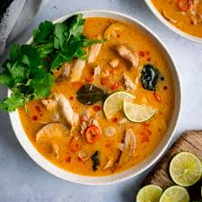

Tom Ka Gai

Tom Kha Gai is a popular Thai soup known for its creamy coconut milk base, fragrant aromatics, and a balance of spicy, sour, salty, and sweet flavors. It typically features chicken, mushrooms, and fresh herbs, all infused with the distinct flavors of galangal, lemongrass, and lime leaves. The soup is known for its rich, comforting, and aromatic character, making it a favorite in Thai cuisine.
Ingredients
- ¾ pound boneless, skinless chicken meat
- 3 tablespoons vegetable oil
- 2 (14 ounce) cans coconut milk
- 2 cups water
- 2 tablespoons minced fresh ginger root
- 4 tablespoons fish sauce
- ¼ cup fresh lime juice
- ¼ teaspoon cayenne pepper
- ½ teaspoon ground turmeric
- 2 tablespoons thinly sliced green onion
- 1 tablespoon chopped fresh cilantro
Steps
- Cut chicken into thin strips and saute in oil for to 2 to 3 minutes until the chicken turns white.
- In a pot, bring coconut milk and water to a boil. Reduce heat. Add ginger, fish sauce, lime juice, cayenne powder and turmeric. Simmer until the chicken is done, 10 to 15 minutes.
- Sprinkle with scallions and fresh cilantro and serve steaming hot.
Home